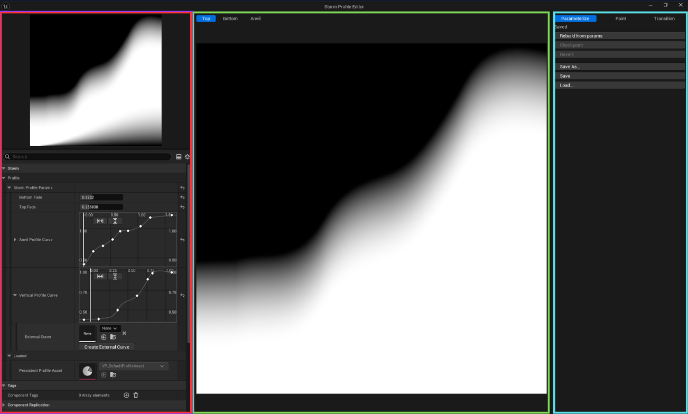

Super
Storm
Team GoroGoro
v1.0.0
One art-directable mesocyclone, solved on the game thread and rendered through Unreal's native cloud volume.
Get it on Fab →A storm is a field you solve, bake and light — not a particle system.
The actor owns shape, motion, profile, flow-map and lightning state. A world subsystem owns the two shape targets, re-bakes them through compute only when the inputs actually change, and binds them onto the volumetric cloud material. The editor viewport ticks the same path, so what you tune is what you ship.
The core lights
from inside
An authored timeline: a flash pulse curve, ground-strike times and free-form cues that fire Blueprint events. Hot-white, fill and leak colors reach the material with an HDR core peak; repeat delay and ground-strike probability handle the rest.
Stop Lightning
On Ground Strike
On Custom Lightning Cue
Painted, not guessed


Presets that travel,
profiles that blend
Transition Target
Play Transition
One preset asset holds the whole storm — shape and motion settings, formation and dissolve durations, the vertical profile and flow-map references, and the complete lightning sequence. Vertical profiles animate from one to another on an alpha you can drive, stop or read back.
What ships
Put it over
your level
Requirements
What the engine, level and GPU have to provide before the storm will render.
Engine
Level setup
The level requires a Volumetric Cloud component. A Sky Atmosphere and a Directional Light are normally required for the expected cloud lighting.
GPU support
The plugin uses compute shaders for shape, profile and flow-map render targets. The target RHI and platform must support the formats and compute functionality used by Unreal’s Volumetric Cloud renderer and RGBA16F UAV render targets.
Module loading
Installation
Getting the plugin into a project and confirming the three modules came up.
Install the plugin
Folder layout
YourProject/
YourProject.uproject
Plugins/
SavageSuperStorm/
SavageSuperStorm.uplugin
Source/
Shaders/
Content/
Resources/Verify the modules
Open Edit → Plugins, search for SavageSuperStorm, and confirm it is enabled. Then enable Show Plugin Content in the Content Browser and confirm the plugin content root is available.
Shipped content
Your first storm
From an empty level to a turning storm, in five steps.
The five steps
First adjustments
Static shape changes schedule a shape rebake. Motion and lifecycle changes upload at frame level instead.
Animate formation
Drive the lifecycle from Blueprint with Create Storm, Dissolve Storm, Show Mature Storm and Hide Storm Immediately. Formation and dissolution completion events are exposed on the actor.
Flow map editor
Painting a three-layer 2.5D wind field that animates the storm independently of its rotation.
What it does
A flow map asset animates the storm independently of the storm’s overall rotation. Three layers — lower, middle and upper — are painted separately and weighted by height.
Opening the editor
Actor Details panel → Functions → Edit Storm Flow Map.

The editor, region by region
What the colour encodes
RGB sets direction only — on decode the vector is re-normalized, so distance from 0.5 has no effect on speed. Magnitude comes entirely from alpha. A neutral texel is (0.5, 0.5, 0.5, 0), which is what an empty layer holds and what Clear Layer writes back.
Save and load
The three layers live in render targets on the storm’s flow map component. They are transient — built at runtime, never serialized. An asset is a saved snapshot, and seeding runs one way: asset into surfaces. That is why painting appears immediately, including in PIE, and equally why nothing survives closing Unreal unless it was written into an asset.
Unsaved transient flow map | Lower | 256 x 256 | unsaved changes
Vertical profile editor
Three lookup textures that carve the storm’s silhouette from top to bottom.
What a profile is
A vertical profile is a lookup texture returning a density multiplier for a given height. The material samples it while marching through the cloud and multiplies the result into the density field.
The editor
Actor Details panel → Functions → Edit Storm Profile.
Parameterize and paint
In Parameterize mode the surface is generated from the parameters and regenerated whenever they change. Paint mode freezes the current surfaces as a base and lets you brush directly onto them, for detail a curve cannot express.

Bottom and anvil
The bottom profile is parametric only — Bottom Fade is its control and the brush does not write to it. The anvil profile is measured downward from its anchor: V = 0 is the anchor and V = 1 the cloud-layer bottom, so a larger curve value reaches further down. It is paintable like the top.
Profile transition
The Transition tab blends the profile you are editing into a second, saved profile. The endpoints are not symmetric: Profile A is the component’s live authoring surface, Profile B is a saved asset that stays immutable for the duration.
Presets
One asset holding the storm’s complete authorable configuration.
What a preset stores
What it does not store
The actor transform, target cloud reference, base cloud material, and the Volumetric Cloud component’s own settings — layer altitude, layer height, tracing and quality — remain outside the preset and must be configured separately.
Applying a preset
ApplyPreset copies values into the actor, updates the profile and flow-map components, sanitizes the result and performs a full render-data rebuild. The actor does not retain a live link to the preset asset.
Editor workflow

Core parameters
Every control the active render, motion, formation and lightning paths actually consume.
Shape and render target
Radial shape curves
Each curve is sampled into a 256-entry lookup table during a full update. Unused colour channels do not participate in the bake hash.
Anvil
Density and lighting
Motion
Formation and lightning
Blueprint API
The nodes and events exposed on the actor and its components.
Formation
Motion
Profile transition
Preset, render and lightning
Events
Limitations
What the renderer deliberately does not do.
One storm per world
The renderer intentionally supports one registered storm actor in each world. The world subsystem rejects an additional actor instead of sharing or replacing shape render targets. Use separate worlds or streamed world instances when two independent storms must be rendered simultaneously.
One unambiguous Volumetric Cloud target
Set TargetCloudReference explicitly when the world contains more than one cloud — automatic targeting succeeds only when exactly one candidate exists. The binder replaces the target cloud’s material with a dynamic instance while the storm is active, and restores the previous material when the storm unregisters or is destroyed.
Cloud-layer ownership
Vertical placement is defined by the Volumetric Cloud component’s layer bottom altitude and layer height. Storm profiles and shape heights use normalized layer space, from zero at the layer bottom to one at the layer top. Moving the storm actor vertically does not move the cloud layer.
Native renderer constraints
Tracing distance, quality, platform support and project-level r.VolumetricCloud.* settings come from Unreal’s cloud renderer. These can change appearance and performance between editor, PIE and packaged builds.
Persistent render-target cost
The subsystem owns two RGBA16F shape targets — roughly 64 MiB together at the maximum supported 2048 resolution. Flow maps and profile targets add to that, so high resolutions should be reserved for shots that need the extra detail.
Troubleshooting
The three failures that actually happen, and what to check first.
The storm does not move
Motion has two gates before anything else. The storm tick returns early when ticking is disabled, and render data is never pushed anywhere when auto-notify is off. Check both before looking at the material.
Shape edits do nothing
The shape targets are baked only when the bake inputs actually change — the subsystem hashes them and skips identical work. Mark the shape dirty to force a rebake; visible change otherwise comes from the material side only.
The storm disappeared after a restart
The cloud component’s material can reset to an engine default, which fails the material contract and skips rebinding. Reassign M_SSS and save the map with the material asset assigned — not a dynamic instance.
Measuring it
Set SavageSuperStorm.Stats to a non-zero value to draw the storm-state overlay: four-decimal timings for the subsystem tick, render-data submit and shape bake, plus the bake count and current render data. Cycle stats and a GPU stat for the shape pass are registered under the SavageSuperStorm stat group.
Team
GoroGoro
A small real-time volumetrics group. We build the storm we wanted to place in a level: one actor, live in the editor viewport, tuned by painting rather than by typing numbers into fields.
Perforce depot · three modules
Seoul